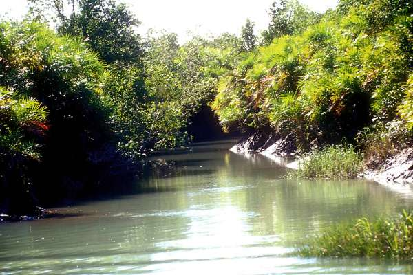
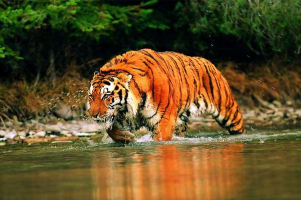
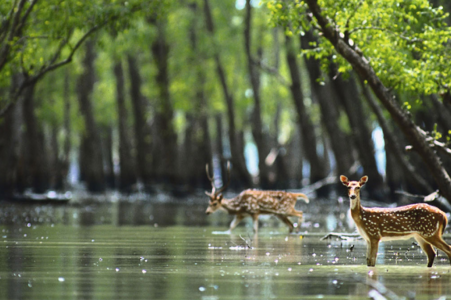
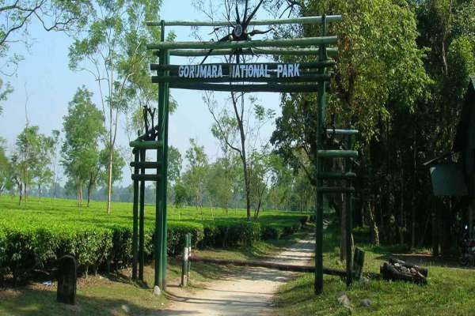
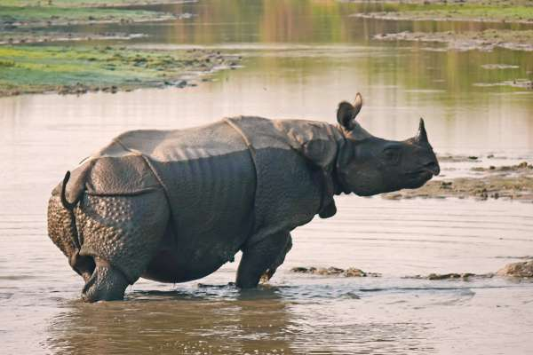
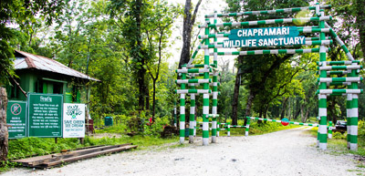
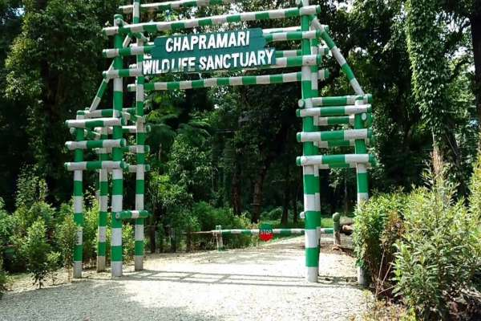

Sundarbans



Sundarbans ecosystem is one of the largest mangrove forest globally. The delta is spread over India and Bangladesh with an area of approximately 10,000 sq kms and enjoys the status of being largest halophytic mangrove forest in the world. It is a delta of the two great Indian River - The Ganga and The Brahmaputra which converges on the Bengal basin. The forests are the natural habitat of the famous Royal Bengal Tigers. Sundarban Tiger Reserve was created in 1973 and constituted as a Reserve Forest in 1978. The current core area was established as a National Park in 1984. Recognizing the region and its unique biodiversity, the National Park was listed as a UNESCO World Heritage Site in 1985.
The entire Sundarban area was declared a Biosphere Reserve four years later. Few of the wildlife species apart from the Royal Bengal Tigers spotted in Sundarbans include the fishing cat, spotted Deer, wild boar, gangetic dolphin, water monitor, estuarian crocodile, river terrapin, olive ridley turtle, ground turtle, hawks bill turtle, king crab, etc.
Gorumara


Gorumara is situated in the foothills of Eastern Himalaya in Terai region and is endowed with forests and grasslands which is home to a diverse range of flora and fauna, especially the mighty One Horned Indian Rhino. This sanctuary is spread over an area of approx. 80 square km. Gorumara was bestowed the title of a Reserve Forest in 1895, then in 1949, it was given the status of a wildlife sanctuary and finally in 1994, it earned the status of National Park.
Ministry of Environment and Forest had also declared Gorumara as one of the best among the protected areas in India for the year 2009. So, if you are a wildlife lover, you should visit this national park and book the jungle safaris for getting up close to the wild animals.
Chapramari Wildlife Sanctuary


Chapramari Wildlife Sanctuary, situated in the vicinity of Gorumara National Park is one of the famous destinations in Dooars. Chapramari is essentially an extension of Gorumara National Park and is separated by the Murti River. The total coverage of Chapramari Wildlife Sanctuary is 960 hectares. Best known for its large Elephant population, Chapramari was declared as wildlife sanctuary in 1998.
The forest is bounded by shimmering river streams making it an ideal place to partake in angling and boating while traveling in Dooars. The Watchtower of Chapramari Wildlife Sanctuary is an ideal place to observe the native and migratory birds on the bank of the river. A wide range of wildlife can be seen at Chapramari which includes elephants, gaurs (Indian bison), leopards, different types of deer including spotted deer, chital, sambar and barking deer, wild boars etc. One can even see one-horned rhinos if they are lucky.